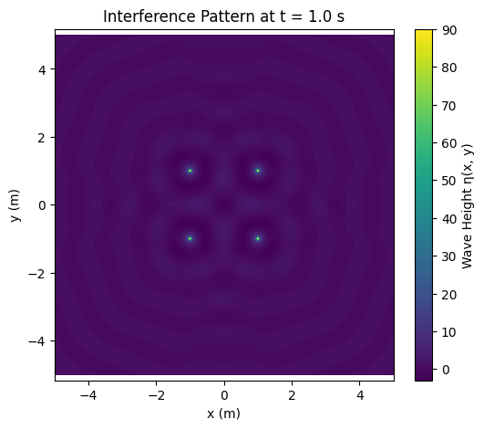
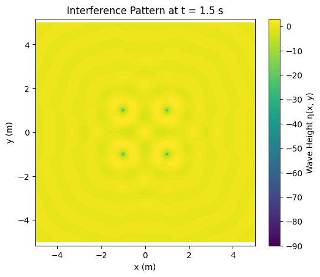

Problem 1
📘 Problem 1: Interference Patterns on a Water Surface
🔍 What Is Interference?
When two or more waves meet on a surface (like water), they combine. This combination is called interference. It can happen in two main ways:
- Constructive interference: Waves add together to make a larger wave.
- Destructive interference: Waves cancel each other out, resulting in a flat surface.
On a water surface, this can be seen as bright and dark patterns—like ripples overlapping.
📐 Choosing a Setup: Regular Polygon
Let’s use a square as our regular polygon. That means we place 4 identical wave sources at the corners of a square. Each one sends out circular waves on the water.
📘 Wave Equation (From One Source)
Each point source creates a wave described by:
Where:
- \(\eta(x, y, t)\): Height of the wave at point \((x, y)\) and time \(t\)
- \(A\): Amplitude of the wave
- \(r = \sqrt{(x - x_0)^2 + (y - y_0)^2}\): Distance from the source at \((x_0, y_0)\) to the point \((x, y)\)
- \(k = \frac{2\pi}{\lambda}\): Wave number, related to the wavelength \(\lambda\)
- \(\omega = 2\pi f\): Angular frequency, related to the frequency \(f\)
- \(\phi\): Initial phase (can be the same for all sources)
🧠 Superposition of Waves
If we have 4 sources (like in the square), the total wave height at any point is the sum of the waves from each source:
This means we just add up the contributions from each source, based on how far each one is from the point we’re looking at.
🎨 What Does the Pattern Look Like?
The result is a complex interference pattern that looks like ripples overlapping in a structured way. What you’ll see:
- Symmetrical patterns, matching the square shape
- Regions of high wave height (constructive interference), forming bright lobes or rings
- Regions of low or zero wave height (destructive interference), where the waves cancel each other
This pattern stays steady in space (assuming time is fixed), and it changes dynamically if you let time move.
🔍 Real-World Applications
- Sonar and radar systems use interference patterns to detect objects
- Optics: Similar patterns happen with light in double-slit experiments
- Acoustics: Speaker setups in rooms create interference zones
 